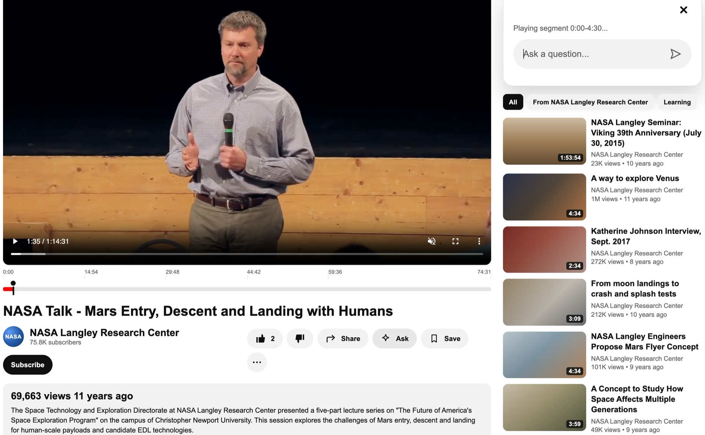
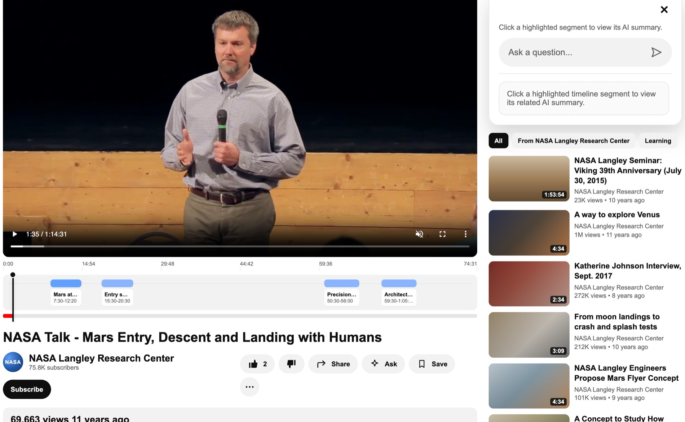
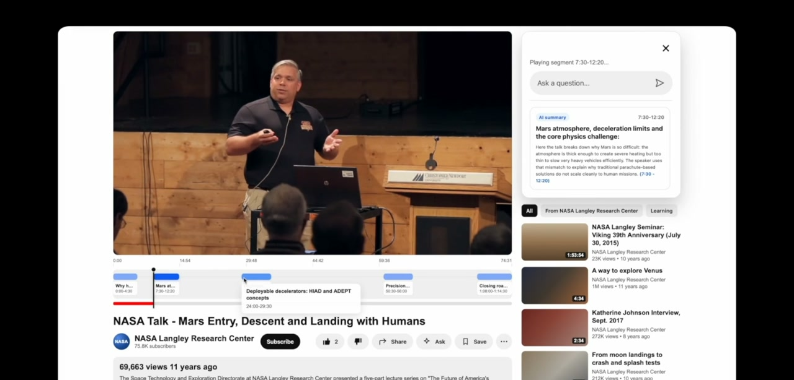

Semantic Decomposition · Applied to Video · Coded Prototype
Ask a question about a video. Jump to the exact moment that answers it. A new navigation pattern for long-form content. Search that returns a location, not a list.
Prompted Find · semantic navigation prototype. Type a question, jump to the moment.
The Method
Semantic Decomposition: break long-form content into labeled, navigable semantic units,
so a question can return a location instead of a summary.
Prompted Find is this method applied to video. The same decomposition works on any surface that has
length but no structure: prose, podcasts, research trails. The medium changes; the interaction stays the same.
The Gap
The thing that makes video easy to watch is exactly what makes it hard to navigate.
Long-form video has no spatial address. A document has paragraphs, headings, a table of contents.
You can navigate it by structure. Video only has time.
Prompted Find makes the timeline navigable by meaning. You ask what you want to find.
The interface segments the video semantically, highlights relevant moments, and jumps you there.
The query returns a location, not a transcript, not a summary. A timestamp you can trust.
Decisions
01
The answer is a timestamp, not text
“Search as navigation.”
The query moves you inside the video. The interface doesn't summarize or transcribe. It relocates you to the moment where the answer lives.
02
Segments, not a search results list
“The timeline is the interface.”
The video timeline is divided into labeled semantic segments. Relevant ones are highlighted. You see the shape of the answer before you click it.
03
The query stays visible while you watch
“Context persists.”
The question panel stays open alongside the video. You can ask follow-ups without losing your place. The interface is a co-pilot, not a one-shot lookup.
Why this pattern matters beyond video. The same logic applies to any long-form content without navigable structure: podcasts, recorded meetings, legal documents, research papers. Prompted Find is a prototype of a pattern: ask a question, get a location. The medium changes. The interaction stays the same.
The Interaction



How It Works
What’s real, what’s simulated. The interface, the timeline, and the navigation are fully working code. The understanding layer is concept aliasing and keyword scoring, not a model. A production version would swap in semantic embeddings. The interaction wouldn’t change.
One Pattern, Three Surfaces
Video
Prompted Find
“Ask a question, get a moment.”
This project. The timeline decomposes into labeled segments; a query lands you inside the video.
Prose
View-spec lanes · in progress
“Every paragraph has an address.”
The same decomposition over long-form writing: labeled semantic lanes you can filter and jump through.
Research
Trails · in progress
“Navigate what you’ve learned.”
Applied to knowledge trails: decompose a research session into revisitable, linkable units.
What I'd Change
Interested in the interaction pattern or how I built it? I'd love to talk about it.